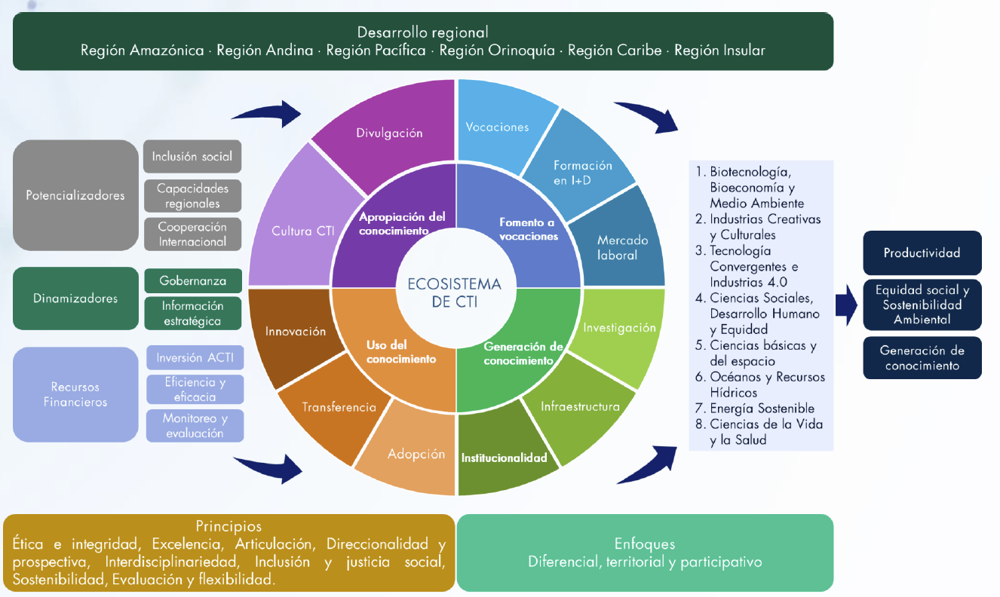

CONPES
Qué es un documento CONPES
El CONPES (Consejo Nacional de Política Económica y Social) es el principal organismo asesor del Gobierno colombiano en todos los aspectos relacionados con el desarrollo económico y social del país. Fue creado por la Ley 19 de 1958, lo preside el Presidente de la República y, de acuerdo con el Decreto 1869 de 2017, son miembros permanentes con voz y voto los ministros de despacho y el director del Departamento Nacional de Planeación (DNP); a ellos se suman, cuando el asunto lo requiere, los directores de departamentos administrativos y, a discreción del Gobierno, invitados con voz pero sin voto. El DNP ejerce la Secretaría Técnica del Consejo, función que delega en su subdirección general sectorial y en su subdirección general territorial según el tema.
Cuando se habla de “un CONPES” en el lenguaje cotidiano, casi siempre se hace referencia a los documentos CONPES: los textos técnicos que el Consejo estudia y aprueba, y que materializan sus decisiones de política. Es clave tener claro qué no son: según ha señalado el Consejo de Estado y la Oficina Asesora Jurídica del DNP, los documentos CONPES carecen de efecto vinculante general porque el Consejo es un organismo colegiado, supraministerial y sin personería jurídica, y no pueden clasificarse como actos administrativos porque no modifican el ordenamiento jurídico. La Corte Constitucional ha sido igual de explícita: el CONPES no reemplaza a quienes lo conforman ni tiene responsabilidades de ejecución; esa responsabilidad recae siempre en las entidades que participaron en su formulación. Solo por vía de norma expresa se le atribuye carácter vinculante en un puñado de funciones puntuales —como la declaratoria de importancia estratégica de proyectos con vigencias futuras, los conceptos favorables de crédito público o la distribución de recursos del Sistema General de Participaciones para primera infancia—, que son la excepción y no la regla.
Existen dos grandes categorías de documentos. Los documentos CONPES de política son los más numerosos y los que más interesan a la gestión de proyectos: fijan lineamientos de política pública allí donde un problema requiere el esfuerzo articulado de varias entidades y sectores, se enmarcan en el Plan Nacional de Desarrollo vigente, y deben cumplir con al menos uno de tres criterios —que el problema requiera un ejercicio coordinado de mediano o largo plazo, que se trate de un tema regional con alcance e impacto nacional, o que declaren la importancia estratégica de un proyecto que ya cuenta con aval fiscal del Confis para comprometer vigencias futuras—. Los documentos CONPES establecidos por norma, en cambio, responden a mandatos legales puntuales: política macroeconómica y fiscal (Marco Fiscal de Mediano Plazo, Marco de Gasto de Mediano Plazo, Plan Operativo Anual de Inversiones), conceptos favorables de crédito público externo, distribución de excedentes financieros y utilidades de empresas del Estado, reajuste de avalúos catastrales o distribución de recursos del SGP para primera infancia. Estos últimos no requieren plan de acción ni son objeto de seguimiento, a diferencia de los documentos de política.

El proceso de elaboración: de la solicitud a la sesión CONPES
A diferencia de herramientas de diagnóstico como la matriz DOFA o el análisis PESTEL, que son sobre todo un método de análisis, un documento CONPES es ante todo un proceso institucional con etapas, plazos y responsables definidos. El DNP lo estandariza en el procedimiento PT-CA-02, complementado por el Manual metodológico para la elaboración de documentos CONPES (DNP, 2025), y lo organiza en cuatro grandes etapas.
La primera etapa es aprobar la viabilidad de elaborar el documento. Todo comienza cuando al menos un miembro del CONPES identifica un problema que considera que amerita un documento y envía una solicitud motivada; la Secretaría Técnica del DNP la evalúa y decide si la aprueba. Solo a partir de esa aprobación arranca formalmente el proceso.
La segunda etapa es elaborar, revisar y aprobar el documento borrador junto con su anexo obligatorio, el Formato Plan de Acción y Seguimiento (PAS, F-CA-02). La entidad o dirección técnica (DT) líder redacta el documento y diligencia la Hoja de Vida del documento CONPES (F-CA-01), mientras concerta con el Área responsable de los asuntos CONPES del DNP los ajustes sucesivos al borrador y al PAS. El manual recomienda que la DT líder tenga una versión borrador sólida con al menos dos meses de anticipación a la fecha prevista para la sesión PreCONPES, un margen que en la práctica es el que separa un proceso ordenado de uno improvisado a última hora.
La tercera etapa es convocar y realizar el PreCONPES: una sesión previa, obligatoria, en la que participan viceministros, subdirectores y jefes de planeación de las entidades comprometidas en el plan de acción —sin su asistencia, la sesión no se lleva a cabo—. Antes de citarla, el documento debe contar con el concepto de la Oficina Asesora Jurídica del DNP y haber sido socializado con las entidades participantes, de modo que el PreCONPES sea una instancia de concertación real y no la primera vez que las entidades ven el documento.
La cuarta y última etapa es producir el documento CONPES definitivo: la sesión CONPES propiamente dicha, presidida por el Presidente de la República, en la que se incorporan los últimos ajustes acordados y se aprueba (o se devuelve para nuevos ajustes) el documento, que luego se publica oficialmente. Solo entonces el problema que dio origen al proceso se convierte en política de Estado, con responsables, metas y financiación comprometidos.
Estructura del documento CONPES de política
El manual metodológico fija una estructura obligatoria para los documentos CONPES de política, pensada para que cualquier lector —experto o no— pueda ubicar rápidamente el problema, la evidencia y la respuesta propuesta. En orden, las secciones son:
- Resumen ejecutivo: versión abreviada de máximo una página con el problema, el objetivo general, las principales acciones, los responsables y los recursos requeridos.
- Clasificación y palabras clave, e introducción: presentan el problema y su importancia, qué se ha hecho antes al respecto y cuál es el valor agregado del documento.
- Antecedentes y justificación: reseña el marco normativo y el marco de referencia de política —nacional, sectorial e internacional— que sustenta y justifica la intervención propuesta (se desarrolla en detalle más adelante).
- Marco conceptual (solo si el tema lo requiere): define de forma concisa los conceptos y teorías técnicas necesarios para entender la política (también se desarrolla más adelante).
- Diagnóstico: describe con evidencia el problema, sus causas, su magnitud y la población afectada; es, según el propio manual, “la parte inicial” de la que depende todo lo que sigue (se desarrolla en detalle más adelante).
- Definición de la política: objetivo general, objetivos específicos, plan de acción (acciones, responsables y horizonte de tiempo), esquema de seguimiento y financiamiento.
- Recomendaciones: directrices formalmente aprobadas por el Consejo, dirigidas a entidades específicas y con fecha de cumplimiento.
- Glosario (opcional), bibliografía en normas APA y anexos, siempre encabezados por el Formato Plan de Acción y Seguimiento (PAS) como Anexo A.
Los documentos CONPES establecidos por norma —los de trámite— no requieren esta estructura completa: al no tener plan de acción ni ser objeto de seguimiento, omiten la sección de definición de la política.
Antecedentes y justificación: cómo se sustenta la necesidad de la política
Esta sección profundiza sobre el estado de la política pública en el tema de interés —ya presentado de forma sintetizada en la introducción—, identifica el marco normativo que sustenta el documento y justifica la política planteada. El manual la divide, en la práctica, en dos ejercicios distintos y consecutivos.
El primero es construir un marco normativo y un marco de referencia. El marco normativo es una reseña breve, en orden cronológico, de las leyes, decretos y demás normas relevantes para el tema. El marco de referencia es más amplio: recoge estrategias o programas nacionales o sectoriales precedentes, iniciativas con propósitos similares, estudios técnicos o académicos previos sobre el estado de la política, y experiencias internacionales relacionadas, con un breve resumen y análisis de cada referencia que destaque su relación con el documento —por ejemplo, las fortalezas o debilidades de los programas precedentes, o los resultados que obtuvieron—. El manual es explícito en que esta sección no debe ser “un recuento de la información existente”, sino una síntesis conceptual estrechamente relacionada con el problema, y que además debe evitar las citas textuales de normas o estudios anteriores, prefiriendo siempre parafrasear con una referencia entre paréntesis.
El segundo ejercicio, la justificación propiamente dicha, toma lo anterior y lo convierte en razones concretas para actuar ahora: a partir del marco normativo y de referencia, se debe demostrar que no existe ya un documento de política que resuelva el problema o, si existe, sustentar por qué se necesitan nuevos avances a partir de sus lecciones aprendidas.
El CONPES 4069 ilustra bien esta lógica de dos tiempos. Sus antecedentes recorren, en orden cronológico, el marco normativo (la Ley 1286 de 2009, el CONPES 3582 de 2009, el Fondo de CTI del Sistema General de Regalías creado en 2011, su reforma en 2020) y el marco de referencia (el CONPES 3582 —desactualizado y con horizonte hasta 2019—, el CONPES 3866 de desarrollo productivo, los CONPES 3934, 3975 y 4023, y la Misión internacional de sabios de 2019). La justificación, en cambio, no repite esa información: construye sobre ella cuatro razones para actuar —que el país necesita actualizar su política ante nuevos retos globales, que el Plan Nacional de Desarrollo 2018-2022 ya comprometió esa actualización, que se requiere una política que incorpore las recomendaciones de la Misión de sabios, y que hacen falta nuevos arreglos de gobernanza multinivel de la CTI—, cada una con su propia oración temática al inicio del párrafo, siguiendo el mismo patrón descrito más adelante en la sección sobre estilo de redacción.
Vale la pena anotar que esta es, de las secciones del documento CONPES, la que más vocabulario comparte con una matriz DOFA: comparar fortalezas y debilidades de programas precedentes o identificar oportunidades y amenazas del marco normativo es, en esencia, un ejercicio DOFA aplicado a la política pública anterior en el tema. La diferencia, de nuevo, es que el manual no lo exige como método formal, sino como resultado: lo que debe quedar en el documento es la síntesis argumentada, no la matriz de cuatro cuadrantes que pudo haberla generado.
Marco conceptual: cuándo y cómo construirlo
No todos los documentos CONPES necesitan un marco conceptual: el manual lo reserva para los casos en los que entender la política exige manejar varios conceptos técnicos o teorías, y su inclusión “depende totalmente del tema tratado”. Cuando sí se necesita, su función es caracterizar y explicar de forma concisa y coherente las definiciones, conceptos y teorías que enmarcan la propuesta, resaltando siempre la relación de cada elemento con el tema tratado y sin perder un orden lógico.
El CONPES 4069 es un buen ejemplo de por qué esta sección puede ser más que un simple glosario ampliado. Su marco conceptual arranca por lo más básico —qué es investigación y desarrollo (I+D) e innovación según los manuales de Frascati y de Oslo, y en qué se diferencian ciencia y tecnología como cuerpos de conocimiento—, pero no se detiene ahí: construye progresivamente un modelo propio, representado en un diagrama de Venn (investigación básica, tecnología e innovación, con y sin base en I+D) y en tres marcos conceptuales alternativos sobre política de CTI (science push, sistemas nacionales de innovación e innovación orientada por misiones). Ese trabajo conceptual no queda aislado: el documento lo cierra en la llamada “conceptualización de la política” —un esquema en forma de rueda con los factores dinamizadores, potencializadores y de recursos del ecosistema de CTI— que termina siendo, literalmente, la estructura que organiza los siete ejes del plan de acción más adelante en el documento.
Esto revela la función real del marco conceptual dentro de un documento CONPES: no es una sección decorativa de definiciones, sino el lugar donde se construye el modelo analítico que después ordena tanto el diagnóstico como el plan de acción. Un marco conceptual bien hecho no solo explica de qué habla el documento; anticipa cómo va a estar organizado el resto de la política.
Diagnóstico: cómo se identifica y se sustenta el problema
El diagnóstico es, en palabras del propio manual, “la parte inicial” del diseño de toda política pública, y de él depende la correcta formulación de todo lo que viene después: las alternativas de solución y las acciones concretas del plan de acción se sustentan directamente en lo que el diagnóstico logre demostrar. El manual no impone el nombre de una técnica cerrada, pero el procedimiento que describe en detalle corresponde, en esencia, a la lógica del árbol de problemas —causas, problema central, efectos—, la misma que el DNP usa para formular proyectos de inversión bajo la Metodología General Ajustada (MGA), aplicada aquí a la escala de una política nacional y no de un proyecto puntual.
En la práctica, el manual describe cinco pasos:
- Levantar información antes de escribir. La dirección técnica (DT) responsable debe hacer una revisión documental completa y adelantar jornadas de discusión con su equipo técnico y con los demás actores participantes, hasta tener “un conocimiento pormenorizado de la situación”.
- Listar y clasificar los problemas. Cuando la política busca resolver más de un problema, estos se agrupan por ejes temáticos, sectores o áreas comunes de intervención, lo que da un esquema de trabajo más claro para las acciones que vendrán después.
- Describir cada problema con cinco elementos fijos: (i) en qué consiste, cuándo y dónde se presenta; (ii) sus causas, reforzadas con datos estadísticos siempre que sea posible; (iii) sus efectos o consecuencias; (iv) la población afectada; y (v) su magnitud, es decir, una línea base sustentada en estadísticas e indicadores. El manual es explícito en que toda afirmación debe estar respaldada con evidencia estadística o cualitativa, y en que se deben “evitar afirmaciones sin el debido sustento”.
- Jerarquizar y priorizar los problemas identificados, usando esas mismas descripciones para determinar cuáles requieren intervención concreta, cuáles generan mayores afectaciones y cuáles son más relevantes según el análisis de información y el criterio técnico del equipo.
- Definir la población objetivo, que no siempre coincide con la población afectada. El manual advierte que identificarla mal puede significar “un presupuesto mal dirigido y malos resultados incluso antes de finalizar la política”; si la población objetivo no coincide con los grupos más afectados, esa decisión debe quedar explícitamente justificada.
El diagnóstico cierra señalando con precisión las causas sobre las que la política pretende incidir, con su debida justificación —el punto exacto en el que arranca la sección de definición de la política: objetivo general, objetivos específicos y plan de acción.
¿Hay aquí vínculo con la matriz DOFA?
En el diagnóstico propiamente dicho, no realmente, y conviene distinguirlo del vínculo más laxo que sí existe en antecedentes y justificación (ver la sección siguiente). La matriz DOFA organiza factores en cuatro cuadrantes —fortalezas, debilidades, oportunidades, amenazas— sin exigir entre ellos una relación causal explícita. El diagnóstico de un CONPES exige, en cambio, construir una cadena causa-problema-efecto alrededor de uno o varios problemas centrales, cuantificada con líneas base y focalizada en una población objetivo verificable. Son ejercicios de naturaleza distinta: uno clasifica percepciones sobre un contexto en cuatro casillas; el otro construye y sustenta estadísticamente una relación causal. Una debilidad o una amenaza identificada en una DOFA previa puede, como mucho, sugerir una candidata a causa o a efecto que el diagnóstico deberá demostrar con datos —pero no reemplaza, ni por estructura ni por rigor exigido, el trabajo de un diagnóstico CONPES.
Cómo se escriben los documentos CONPES: el estilo de la oración temática
El manual no solo regula la estructura del documento; también fija reglas de redacción bastante precisas —tipo y tamaño de letra, uso de mayúsculas y cursivas, formato de cifras— y, entre las “sugerencias de redacción”, dos que son más de fondo que de forma: que las oraciones de los párrafos sean cortas, porque “las oraciones largas desgastan al lector”, y que se eviten las citas textuales, prefiriendo siempre parafrasear e interpretar la fuente para hacer el documento menos denso.
Estas dos reglas, aplicadas de manera sistemática, producen exactamente el patrón que describe la teoría de la oración temática o topic sentence: un párrafo que abre con una afirmación específica y enfocada que sostiene, anuncia y controla lo que sigue, seguida de oraciones de apoyo con datos y citas que la sustentan. El CONPES 4069 (Política Nacional de Ciencia, Tecnología e Innovación 2022-2031) lo ilustra con una disciplina notable: prácticamente cada párrafo del documento abre con una oración —tipográficamente resaltada en el original— que funciona como su idea controladora. Por ejemplo, la introducción abre así:
“A pesar de los avances recientes del país en Ciencia, Tecnología e Innovación (CTI), esta contribuye de manera limitada a su desarrollo social, económico, ambiental, y sostenible.” (CONPES 4069, 2021, p. 10)
El resto del párrafo no repite la idea ni se dispersa: aporta evidencia puntual (el puesto 67 de 132 países en el Índice Global de Innovación, una inversión del 0,29 % del PIB en investigación y desarrollo frente al 2,35 % promedio de la OCDE) que sostiene exactamente esa afirmación inicial y nada más. El diagnóstico sigue el mismo patrón a otra escala: la sección 4 abre con “La baja contribución de la CTI en Colombia limita su desarrollo social, económico, ambiental, y sostenible” (p. 26), y cada uno de sus siete subtemas repite la fórmula con su propia oración controladora —“El país presenta un amplio rezago frente a pares internacionales en materia de formación de capital humano en áreas del conocimiento STEAM” (p. 27), sostenida de inmediato con la cifra de que solo el 1,77 % de los matriculados en educación superior está en áreas de matemáticas, ciencias y estadística, frente al 6,24 % promedio de la OCDE—.
Este patrón no es casual: es la forma más eficiente de cumplir a la vez con las dos reglas del manual. Una oración temática enfocada al inicio le permite al lector saber, con una sola frase corta, de qué tratará el párrafo; y el resto del párrafo, dedicado por completo a evidencia parafraseada y citada, evita la tentación de la cita textual porque ya no necesita “explicar” la idea —solo sustentarla—. Para quien redacte un documento CONPES, revisar cada párrafo con las tres preguntas de la teoría de la oración temática (¿sostiene la idea central?, ¿anuncia de qué tratará el párrafo?, ¿controla que todo lo que sigue se relacione con ella?) es, en la práctica, una forma directa de cumplir con las sugerencias de redacción del propio manual del DNP.
Seguimiento: SisCONPES y el indicador Idaer
La aprobación en sesión CONPES no cierra el proceso: es el punto de partida del seguimiento. Una vez aprobado un documento CONPES de política, las entidades responsables de cada acción del PAS deben reportar semestralmente su avance físico y financiero —con corte a 30 de junio y 31 de diciembre— a través del aplicativo web SisCONPES, cuyas estadísticas de avance por acción, objetivo y documento son de consulta pública.
Para facilitar esa lectura, el DNP calcula el Idaer (indicador de la diferencia entre el avance esperado y real), que compara el porcentaje de avance real de las acciones con el propuesto inicialmente en el PAS y clasifica el rezago en tres niveles de alerta: verde (Idaer ≥ -11 %, sin rezago o rezago mínimo), amarillo (entre -33 % y -11 %, rezago moderado) y rojo (por debajo de -33 %, rezago significativo). Los casos en rojo son los que ameritan que la dirección técnica líder revise si el rezago se debe a falta de reporte o a baja ejecución real, y tome medidas puntuales para corregirlo. El seguimiento se cierra cuando las acciones alcanzan el 100 % de avance, cuando el contexto le hace perder vigencia a los lineamientos, cuando existe una justificación jurídica o técnica documentada para el incumplimiento, o cuando el documento es reemplazado por otro que incorpora sus acciones pendientes.
¿Necesita un documento CONPES de un análisis DOFA?
La respuesta corta, después de revisar las dos secciones donde el vínculo podría existir, es: depende de cuál sección, y en ningún caso es obligatorio. El manual metodológico del DNP no menciona la matriz DOFA, el PESTEL ni ninguna otra herramienta de análisis estratégico como parte formal del proceso; lo único que exige de manera explícita es que antecedentes y diagnóstico estén sustentados en evidencia verificable, no en una metodología particular.
En el diagnóstico, el vínculo es débil: como se explicó más arriba, esa sección exige construir una cadena causa-problema-efecto cuantificada con líneas base, una lógica de árbol de problemas que la DOFA no produce. En antecedentes y justificación, en cambio, el vínculo es más natural: comparar fortalezas y debilidades de política precedente, u oportunidades y amenazas del contexto normativo, es literalmente el vocabulario de la matriz DOFA y del análisis PESTEL. En ambos casos la diferencia de fondo es la misma: en la DOFA, el cruce de factores es el método; en un documento CONPES, ese ejercicio cualitativo es, en el mejor de los casos, un insumo de trabajo interno previo a la escritura, que el manual no exige y que nunca reemplaza la evidencia estadística y documental que finalmente debe quedar en el texto.
Infografía: el ciclo de un documento CONPES
El documento CONPES
De la solicitud de un miembro del Consejo a la política de Estado
no solo un documento.
Un miembro del CONPES solicita el documento; la Secretaría Técnica evalúa y aprueba la solicitud.
La DT líder redacta el documento borrador y concerta con el DNP el Plan de Acción y Seguimiento (PAS).
Sesión previa obligatoria con viceministros y subdirectores de las entidades comprometidas en el PAS.
El Consejo, presidido por la Presidencia, aprueba el documento y se publica la versión oficial.
Del proceso de elaboración al seguimiento
| Etapa | Qué produce | Quién interviene | Herramienta de soporte |
|---|---|---|---|
| Viabilidad | Solicitud motivada aprobada | Miembro del CONPES + Secretaría Técnica (DNP) | Hoja de vida F-CA-01, sección A |
| Elaboración | Documento borrador + PAS concertado | DT líder + Área de asuntos CONPES | Formato PAS F-CA-02 |
| PreCONPES | Documento y PAS ajustados y concertados | Viceministros, subdirectores, entidades participantes | Concepto de la Oficina Asesora Jurídica |
| Sesión CONPES | Documento CONPES publicado | Consejo Nacional de Política Económica y Social | Sesión presidida por la Presidencia |